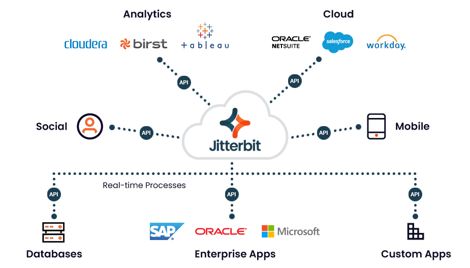

O que é uma API?

Uma API (Application Programming Interface) é uma interface de computação que define as interações entre diferentes componentes de software. Ela atua como um intermediário que permite que duas aplicações "conversem" entre si por meio de um conjunto definido de regras, protocolos e ferramentas. Do ponto de vista técnico, a API funciona como uma camada de abstração: ela encapsula a lógica interna complexa de um sistema e expõe apenas as funcionalidades necessárias para o consumo externo.
Essa interface estabelece um contrato de serviço, onde são definidos os tipos de requisições que podem ser feitas, como fazê-las e quais formatos de dados serão retornados (como JSON ou XML). Isso garante que sistemas heterogêneos, independentemente da linguagem de programação ou infraestrutura, possam trocar informações com segurança e previsibilidade, sem a necessidade de acesso direto ao banco de dados ou ao código-fonte original.
A importância de uma API
A importância das APIs no cenário tecnológico contemporâneo reside primordialmente na sua capacidade de promover a interoperabilidade e a modularidade entre sistemas distintos. Elas atuam como o motor da inovação, permitindo que organizações integrem serviços especializados de terceiros — como gateways de pagamento, mapas ou ferramentas de inteligência artificial — sem a necessidade de desenvolver essas funcionalidades do zero, o que reduz drasticamente custos e o tempo de lançamento no mercado (time-to- market). Além de facilitar a criação de ecossistemas digitais integrados, as APIs oferecem uma camada crítica de segurança e governança, garantindo que o compartilhamento de dados ocorra de forma controlada e auditável, permitindo que as empresas escalem suas operações de maneira flexível e eficiente na nuvem.
Tipos de APIs
A classificação das APIs varia de acordo com sua arquitetura, protocolos de comunicação e finalidades específicas de integração. A seguir, são apresentados os modelos mais proeminentes e utilizados no desenvolvimento de software moderno:
-
REST
Amplamente utilizado na web por ser leve e usar métodos HTTP (GET, POST etc.), facilitando a comunicação entre navegadores e servidores.
-
SOAP
Um protocolo mais rígido baseado em XML, preferido por grandes corporações e bancos devido aos seus padrões elevados de segurança e conformidade.
-
GraphQL
Uma alternativa moderna que permite ao cliente solicitar apenas os dados específicos de que precisa, otimizando o tráfego de rede.
As APIs REST
As APIs REST (Representational State Transfer) consolidaram-se como o padrão de mercado devido à sua simplicidade e perfeito alinhamento com a arquitetura da Web. Diferente de protocolos mais rígidos, o modelo REST baseia-se em princípios fundamentais como a ausência de estado (statelessness), o que significa que cada requisição contém todas as informações necessárias para ser processada.
Sua popularidade deve-se, em grande parte, ao uso de métodos HTTP padrão (GET, POST, PUT, DELETE) e ao suporte ao formato JSON (JavaScript Object Notation), que é extremamente leve e de fácil leitura. Essa flexibilidade permite que desenvolvedores construam sistemas altamente escaláveis e de alta performance, sendo a escolha preferencial para aplicações móveis, serviços em nuvem e a maioria das integrações web modernas.
Integração
A integração de APIs representa o processo de conectar sistemas e aplicações heterogêneos para permitir um fluxo contínuo e automatizado de dados, superando definitivamente o isolamento de informações em "silos" organizacionais. Tradicionalmente, as corporações dependiam de middlewares complexos e codificação personalizada, como os Barramentos de Serviços Corporativos (ESB) e estruturas rígidas de Integração de Aplicativos Empresariais (EAI). Conforme apontado em análises técnicas de organizações de referência como a IBM, essas soluções legadas costumavam ser dispendiosas, difíceis de manter e lentas para se adaptar às demandas de um mercado dinâmico.

Com a evolução para ambientes de nuvem híbrida e o surgimento de plataformas de integração modernas (como o iPaaS), as APIs tornaram-se o meio definitivo de simplificar esse cenário. Estudos de arquitetura de sistemas, como os publicados no Sarcouncil Journal e relatórios técnicos da AWS, revelam que a transição de middlewares tradicionais para ecossistemas modernos baseados em APIs pode reduzir a complexidade de desenvolvimento em mais de 60%, além de otimizar expressivamente a latência de comunicação. Esse novo paradigma de integração confere às organizações a agilidade necessária para incorporar novas tecnologias e automatizar fluxos de trabalho de ponta a ponta com máxima eficiência e segurança.
Benefícios e
facilidades
A criação de APIs reduz drasticamente o tempo de desenvolvimento (time-to-market), pois permite a reutilização de componentes e a automação de tarefas manuais, proporcionando uma arquitetura de software mais flexível e fácil de manter.
Considerações finais
Em suma, as APIs consolidaram-se como pontes de comunicação seguras e eficientes entre sistemas heterogêneos, atuando como ativos estratégicos indispensáveis na economia digital contemporânea. A análise das arquiteturas REST, SOAP e GraphQL evidenciou que a correta escolha de interface simplifica o desenvolvimento e garante a escalabilidade dos negócios. Além de otimizar a performance técnica, a transição de barramentos legados (ESB) para ecossistemas modernos orientados a APIs elimina os silos de informação, reduzindo a complexidade de integração empresarial e acelerando o time-to- market. Assim, as APIs superam barreiras operacionais e sustentam com agilidade a automação, a nuvem híbrida e a transformação digital das organizações.
Referências
-
1 ALURA. Entenda o que é uma API e sua importância. Alura Cursos Online, 29 fev. 2024. Disponível em: https://www.alura.com.br/artigos/api. Acesso em: 19 ago. 2026.
-
2 DEVMEDIA. O que é API? O Guia Completo para Entender a Integração de Sistemas. DevMedia, 2026. Disponível em: https://www.devmedia.com.br/o-que-e-api-o-guia- completo-para-entender-a-integracao-de-sistemas/44620. Acesso em: 19 ago. 2026.
-
3 MARFIN. O que é API: O Guia Completo para Não-Devs. Marfin Blog, 19 ago. 2026. Disponível em: https://blog.marfin.co/o-que-e-api-o-guia-completo-para-nao-devs-2026. Acesso em: 19 ago. 2026.
-
4 MICROSOFT. Práticas recomendadas para design de API Web RESTful. Azure Architecture Center | Microsoft Learn, 2026. Disponível em: https://learn.microsoft.com/pt-br/azure/architecture/best-practices/api-design. Acesso em: 19 ago. 2026.
-
5 NIETSCHE, Monica. Conheça 3 Métodos de Autenticação de APIs. Blog InterGATE, 5 maio 2020. Disponível em: https://www.intergate.net.br/blog/. Acesso em: 19 ago. 2026.
-
6 SAP. O que é integração de APIs e como ela transforma a TI empresarial. SAP, 18 jun. 2025. Disponível em: https://www.sap.com/brazil/resources/api-integration. Acesso em: 19 ago. 2026.
-
7 SEMTCHUK, Sarah Carnevali; ANDRADE, Vinicius Santos. A API como ativo estratégico: modelos de monetização e impactos arquiteturais em marketplaces. Revista E&S, Piracicaba, 11 ago. 2026. DOI: 10.22167/2675-6528-202601442. Disponível em: https://revistaes.com.br/artigos/. Acesso em: 19 ago. 2026.
-
8 TOBIN, Donal. Top REST API Best Practices for Data Integration. Integrate.io, 11 fev. 2026. Disponível em: https://www.integrate.io/blog/top-rest-api-best-practices-for-data-integration/. Acesso em: 19 ago. 2026.